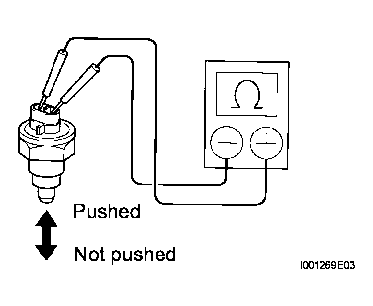

Back-Up Light Switch: Inspection
- INSPECT BACK-UP SWITCH ASSEMBLY
- Inspect the back-up light switch.
- Measure the resistance of the switch.
Standard resistance
TERMINALS RESISTANCE SPECIFICATIONTester Connection Switch operation Specified condition 1 - 2 Pushed Below 1 Ω 1 - 2 Not pushed 10 kΩ or higher 
Courtesy of © TOYOTA, LICENSE AGREEMENT TMS1002If the result is not as specified, replace the switch assembly.
- Measure the resistance of the switch.
- Inspect the back-up light switch.